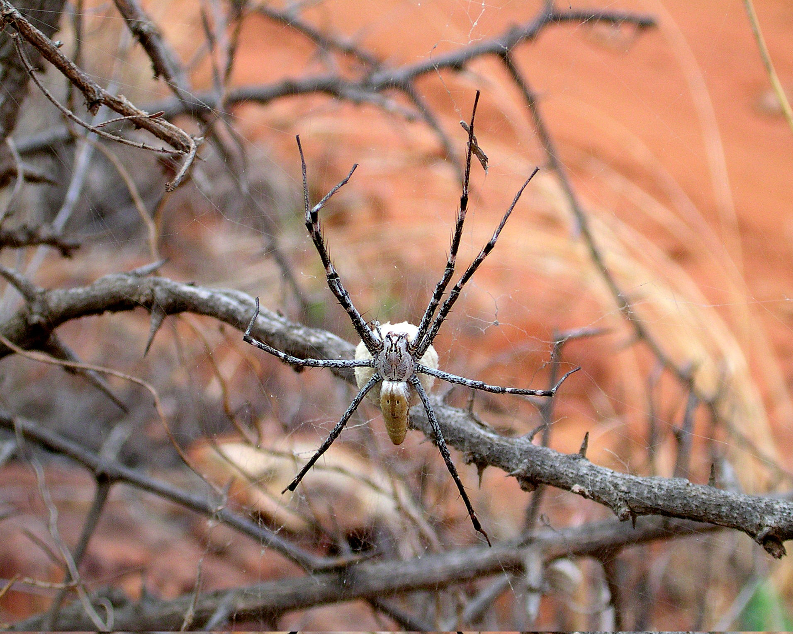
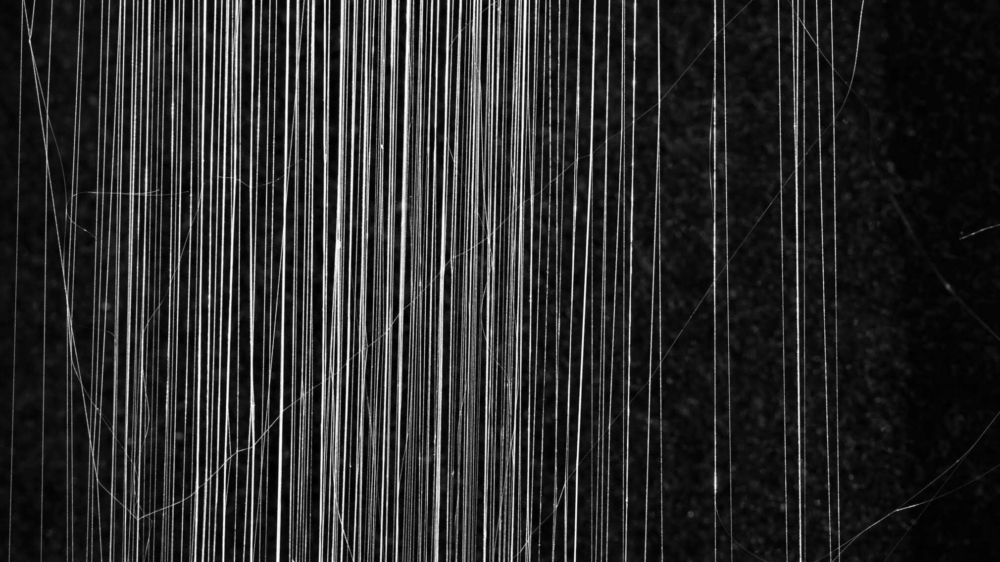
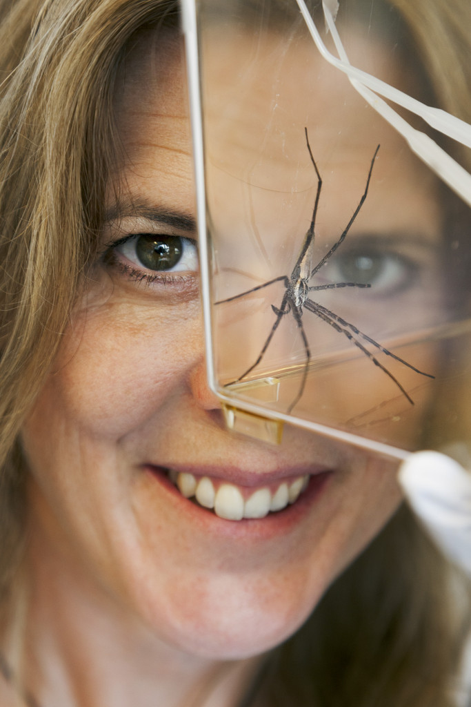
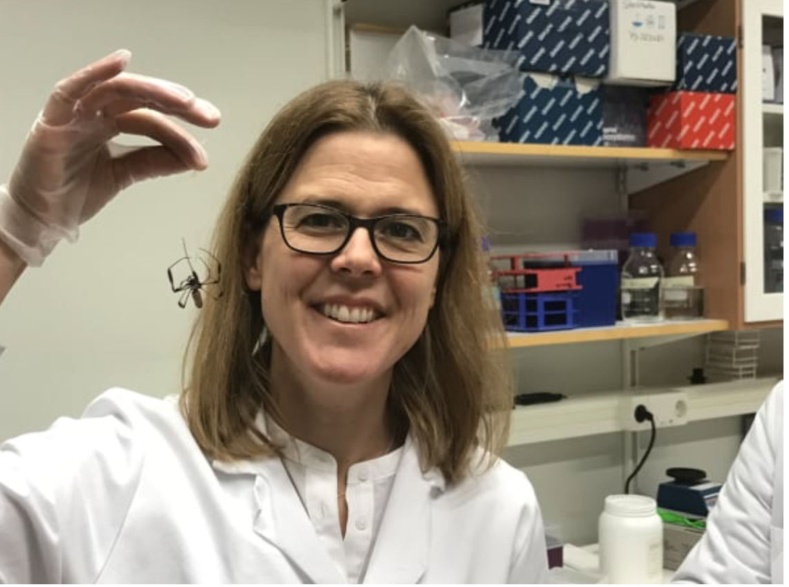
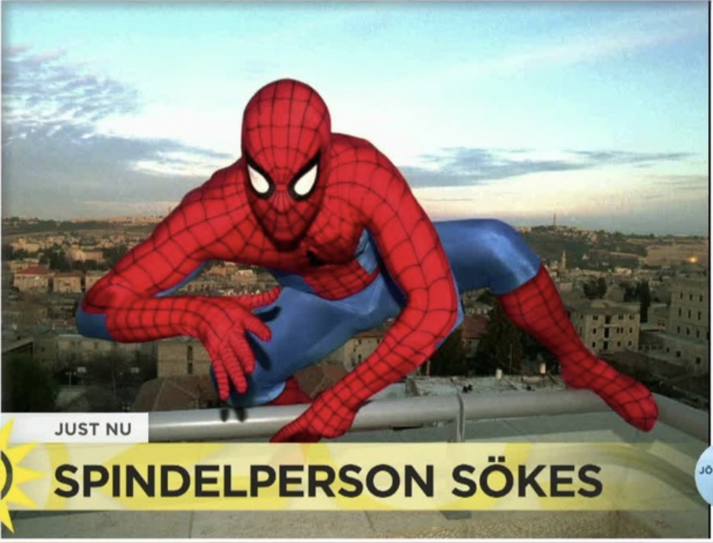

Spider Silk Biology for Biomedical Applications
Anna Rising Lab
HOME
RESEARCH FOCUS
TEAM
PUBLICATIONS
IN THE NEWS
CAREERS
CONTACT
Lecture at Nobel Calling Stockholm
In The News
Untangling the Mystery of Spider Silk

NewYork Times
Så har forskarna tagit fram 12 mil konstgjord spindeltråd-Dagens nyheter.

Dagens Nyheter
Annas spindeljakt

Radioscience
Spinning like a spider

AcademiaNet interview
Discovery of next-generation therapeutics and materials
Voices of chemical biology
Är du nya spindelmannen?

tv4
Spider Silk and Super Fly Senses
BBC